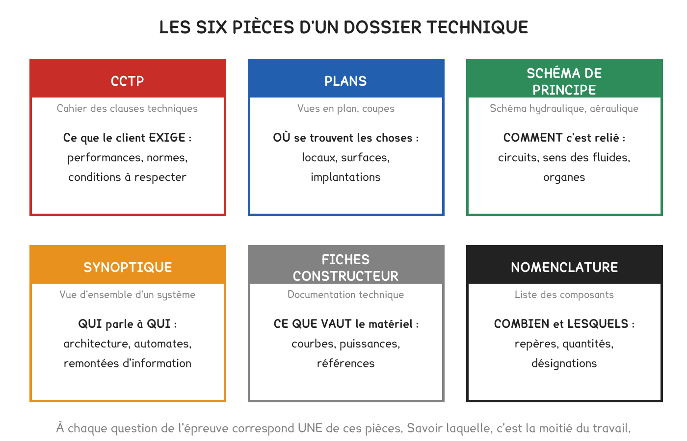
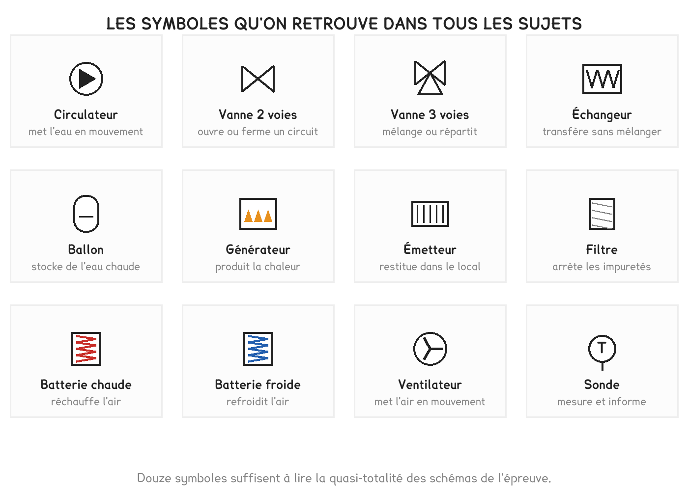
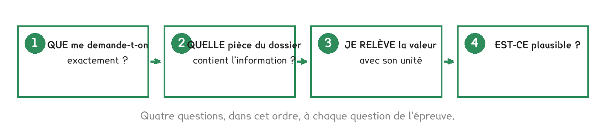

BTS FED option C · 2e année
Quatre questions sur dix consistent à trouver la bonne information et à la relever avec son unité. C'est la séance qui contient le moins de calculs, et c'est la plus rentable de l'année.
1 outil · 8 questions · 2 exercices · 6 replis · 4 figures
Savoirs travaillés
Sur les neuf derniers sujets d’U41, 227 consignes ont été relevées. Le calcul n’en représente que 17 %. Quatre sur dix demandent seulement de trouver une information dans le dossier.
Autrement dit : un étudiant qui calcule parfaitement et lit mal un dossier plafonne autour de 7 sur 20. Cette séance ne contient presque aucun calcul.
Le levier principal n’est pas le calcul. C’est le résultat le plus important de l’analyse des annales, et le plus contre-intuitif. Réviser des formules sans savoir lire un dossier est un mauvais placement de temps.

Un dossier d’épreuve est organisé, toujours de la même façon. On ne le lit pas en entier : on sait où aller.
| Pièce | Ce qu’on y trouve |
|---|---|
| Présentation | le bâtiment, sa destination, le contexte du projet |
| DT : documents techniques | plans, schémas, extraits de CCTP, tables, courbes constructeur |
| DR : documents réponses | ce qu’il faut compléter et rendre avec la copie |
| Énoncé de partie | les questions, et souvent le numéro du DT où chercher |
Les DR sont à rendre. Ils portent des points, souvent beaucoup, compléter un tableau ou tracer un circuit vaut autant qu’un calcul. Un candidat qui les oublie dans son brouillon perd des points déjà acquis.
C’est la méthode de la séance, et elle se déroule dans cet ordre.
Si une donnée semble manquer, c’est presque toujours qu’on ne l’a pas cherchée dans la bonne pièce. Les sujets sont complets, c’est une propriété de l’épreuve, pas une chance. On ne suppose jamais une valeur absente.
Deux questions sur dix ne demandent pas une valeur mais un numéro de document : « sur quel document trouve-t-on… », « quel DR compléter… ». La formulation le dit ; répondre par une valeur ne rapporte rien.

Un schéma de principe ne représente ni les distances ni les positions réelles. Il représente les liaisons : qui est relié à quoi, et dans quel sens circule le fluide.
Le réflexe qui fait gagner du temps : suivre un fluide du doigt, d’un bout à l’autre, en nommant chaque organe rencontré. Si on ne peut pas aller du générateur à l’émetteur et revenir, c’est qu’on n’a pas compris le schéma.
Dans un échangeur, les deux fluides ne se mélangent jamais. Ils échangent de la chaleur à travers une paroi. C’est une règle physique, et une réponse attendue à chaque fois qu’un schéma montre un réseau urbain et un circuit de bâtiment qui se rencontrent.

Toute installation pilotée superpose deux chaînes. L’une transporte la puissance. Le fluide, le courant. L’autre transporte la décision, la mesure, la consigne, l’ordre.
Les reconnaître permet de répondre à une famille entière de questions : classer des équipements, dire ce qui commande quoi, et repérer où une information devient une action.
À observer en entreprise
Demander à consulter un dossier de chantier réel, un DOE, un CCTP, un dossier de consultation. Repérer comment il est organisé, et combien de pièces il comporte.
Relever, sur ce dossier, trois informations : la puissance d’un générateur, un régime de température, et un débit. Noter dans quelle pièce chacune se trouvait.
Exercice · C12-2
Vous devez relever le prix du kWh facturé par le réseau de chaleur. Dans quelle pièce du dossier allez-vous ?
Exercice · C2-2
Une sonde de température, une vanne motorisée et un circulateur. Dites à quelle chaîne appartient chacun, et lequel appartient aux deux.
Pour aller plus loin
Les 227 consignes relevées sur neuf sessions se rangent en cinq familles. Le verbe dit la forme de la réponse attendue, et répondre dans la mauvaise forme coûte les points même quand le fond est juste.
| Famille | Part | Verbes | Ce qu’on écrit |
|---|---|---|---|
| Extraire | 40 % | indiquer, donner, identifier, préciser, citer, relever, nommer, repérer | une valeur avec son unité, ou un nom. Une ligne |
| Justifier | 23 % | justifier, expliquer, conclure, montrer, décrire, comparer | trois à cinq lignes : un fait, une cause, une conséquence |
| Produire un graphique | 18 % | compléter, représenter, surligner, tracer, positionner | sur le DR, proprement, avec la légende demandée |
| Calculer | 17 % | déterminer, calculer, vérifier, estimer, évaluer | la formule, l’application numérique, le résultat avec l’unité |
| Choisir | 2 % | proposer | une solution et sa justification |
« Indiquer » ne demande pas de justification, « justifier » ne se satisfait pas d’une valeur. Un candidat qui rédige un paragraphe là où on attend un nombre perd du temps sans gagner de points ; celui qui donne un nombre là où on attend un raisonnement perd les points.
Le cas de « vérifier ». C’est un verbe de calcul, mais il attend deux choses : le calcul, et la conclusion explicite. « Vérifier que le débit respecte le CCTP » se termine par une phrase, « la valeur calculée est de 1 836 m³/h, conforme aux 1 836 m³/h du CCTP », sinon la moitié du point manque.
Le cas de « comparer ». Il attend un critère de comparaison nommé, pas deux descriptions côte à côte. « L’un est plus efficace » ne vaut rien ; « son efficacité est supérieure parce qu’il récupère aussi le latent » vaut le point.
Le barème de l’épreuve prévoit explicitement quinze à vingt minutes de lecture du sujet. La plupart des candidats les utilisent à lire la première partie et commencent à répondre. C’est un gaspillage.
Ce qu’on fait pendant ce temps, dans cet ordre :
Les parties sont indépendantes et se rendent sur copies séparées. Rien n’oblige à les traiter dans l’ordre. Commencer par celle qu’on maîtrise est une stratégie légitime : on sécurise des points, et on aborde les autres en confiance.
Le temps conseillé n’est pas indicatif, il est proportionnel au barème. Le barème 2026 donne environ 2,7 minutes par point. Un candidat qui respecte les temps annoncés ne peut pas se tromper d’arbitrage, et celui qui passe quarante minutes sur une partie qui en vaut vingt-cinq se prive mécaniquement d’une autre.
Le geste de fin de partie, qu’on oublie sous la pression : relire les questions de la partie pour vérifier qu’aucune n’a été sautée. Une question non traitée vaut zéro ; une question traitée à moitié vaut souvent la moitié.
C’est un quart de l’épreuve, et c’est ce que ces étudiants pratiquent le moins. Une justification qui rapporte tient en trois à cinq lignes et suit une structure fixe.
Un fait, une cause, une conséquence.
Deux mots ne rapportent rien ; une page non plus. Une réponse trop courte ne montre pas le raisonnement ; une réponse trop longue noie le point que le correcteur cherche, et coûte le temps d’une autre question. Le calibre est de trois à cinq lignes, et il s’entraîne.
Trois habitudes qui font la différence :
Ce que le correcteur a sous les yeux, et qui explique tout : un barème détaillé qui attribue les points à des éléments précis, « 1 point le rapport des débits, 1 point l’économie ». Il cherche ces éléments. Une réponse qui les contient, même maladroitement rédigée, les obtient.
Le dossier d’épreuve est une réduction d’un dossier réel. Savoir ce qui a été retiré aide à comprendre ce qu’on retrouvera en entreprise.
Les pièces d’un marché de travaux :
| Pièce | Ce qu’elle fixe |
|---|---|
| CCTP : cahier des clauses techniques particulières | ce qui doit être fait, avec quelles performances |
| CCAP : clauses administratives | délais, pénalités, paiements, garanties |
| DPGF ou bordereau | le détail des prix, poste par poste |
| Plans et schémas | l’implantation et les principes |
| Notes de calcul | les justifications de dimensionnement |
| DOE : dossier des ouvrages exécutés | ce qui a réellement été posé, remis à la réception |
Trois différences avec un sujet d’épreuve, et chacune compte :
La hiérarchie des pièces est écrite dans le marché lui-même, dans un ordre de priorité en cas de contradiction. Savoir que cet ordre existe et où le lire est déjà une compétence professionnelle.
Le dossier d’épreuve est en papier, et il le restera. Le dossier de chantier, lui, se dématérialise, et la façon de chercher une information change avec.
La maquette numérique. Un modèle en trois dimensions où chaque objet porte ses propres données : un ventilo-convecteur y est un objet qui connaît sa puissance, son débit, sa marque et sa position. On n’y cherche plus une information dans un tableau : on interroge l’objet.
Ce que ça change pour un technicien :
Ce que ça ne change pas, et c’est le point important : il faut toujours savoir ce qu’on cherche. Un modèle mal renseigné produit des quantitatifs faux avec une autorité trompeuse. La compétence de lecture ne disparaît pas, elle se déplace vers la vérification de cohérence.
La compétence C12-2 « extraire les informations » ne devient pas obsolète avec le numérique. Elle devient plus critique : quand l’information est facile à obtenir, l’erreur consiste à ne pas se demander si elle est juste.
Les quatre questions de la séance marchent aussi sur une machine frigorifique, et elles y trouvent des réponses que le bâtiment n’a pas.
| La question | Où on la lit |
|---|---|
| Quoi ? | la plaque du compresseur : nature du fluide, R410A, R32, R290 |
| Combien ? | la charge en kilogrammes, gravée ou sur l’étiquette réglementaire |
| Où ? | le schéma frigorifique : évaporateur, condenseur, détendeur, lignes |
| Sous quelle contrainte ? | l’équivalent CO₂, qui fixe la fréquence de contrôle |
L’étiquette réglementaire est le document neuf de ce chapitre. Elle porte la désignation du fluide, sa charge en kilogrammes et en tonnes équivalent CO₂, et la mention « contient des gaz à effet de serre fluorés ». Elle est obligatoire sur l’équipement, en français, et lisible sans démonter.
La charge inscrite est celle d’usine. Un circuit rallongé sur chantier a reçu un complément qui doit figurer, ajouté à la main, sur la même étiquette. Une étiquette non mise à jour rend le calcul des tonnes équivalent CO₂ faux, donc la fréquence de contrôle fausse aussi.
Le document qui n’existe pas en bâtiment : la fiche d’intervention. Chaque passage sur un circuit frigorifique en produit une, avec les quantités mises en œuvre et récupérées. C’est elle qui prouve qu’aucun fluide n’a été relâché, et c’est le premier papier demandé lors d’un contrôle. Un dossier de machine frigorifique sans historique de fiches est un dossier incomplet.
Cette page rappelle la séance. Elle ne remplace pas le polycopié et ne donne aucun corrigé. Tous les calculs se font dans votre navigateur ; rien n'est enregistré.